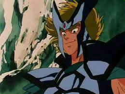

Los caballeros que protegen a la diosa Athena pueden ser divididos en 3 grupos: estan los caballeros de bronce, de plata, de oro y los de acero (que no protegen a Athena pero si son buenos ).

Tambien, ahi otros tipos de caballeros con sus respectivas armaduras estos no protegen a Athena pero si a otros dioses , como lo son los portadores de : las Armaduras Negras, las God Robes , Las Escamas y Los Sapuris.
Caballeros de Acero
Este tipo de armaduras no pertenece a la legión de Santos de Athena, esto debido a que fueron creados tecnológicamente, es por ello que no poseen una constelación guardiana, fueron creadas por el Dr. Asamori.
Portadores de las armaduras de acero
Ushio de la armadura Marina
Sho de la armadura del Aire
Caballeros de Bronce
Los caballeros de bronce son el más bajo rango de los caballeros de la diosa Athena, siendo superados por los Caballeros de plata y los Caballeros de oro. Los caballeros de bronce constituyen las tropas de avanzada y la primera línea de defensa en caso de un ataque enemigo hacia el santuario.
La velocidad de ataque de un Santo de Bronce regular al utilizar su cosmos puede llegar a la del sonido. Si despiertan el séptimo sentido y hacen arder su cosmos pueden derrotar a un caballero de plata, y si lo usan al máximo a un caballero de oro; la armadura de bronce puede resistir un frío descendiente hasta -150° celsius antes de romperse.
Portadores de las armaduras de bronce
Seiya de Pegaso
Shun de Andromeda
Ikki de Fénix
Shiryu de Dragón

Hyoga de Cisne
Jabu de Unicornio
Geki de Osa Mayor
Nachi de lobo
Ban de León
Ichi de Hydra
June de Camaleon
Caballeros de Plata
Los caballeros de plata son caballeros de Athena, cuyo rango es superior al de los caballeros de bronce, pero inferior al de los caballeros de oro.
Son expertos en la guerra y dotados de una excelente capacidad de lucha, por ello estan en el segundo nivel en el ejército de Athena.
Portadores de las armaduras de plata
Marin de Águila
Shaina de Ofiuco
Misty de Lagarto
Moses de Ballena
Asterion de Perros de caza
Babel de Centauro
Jamian de Cuervo
Algol de Perseo
Capella de Auriga
Dante de Cerbero
Algethi de Hercules
Dio de Mosca
Sirius de Can mayor
Ptolemy de Flecha
Alboire de Cefeo
Orfeo de Lira
Daidalos de Cefeo
Shiva de Pavo Real

Agora de Loto
Aracne de Tarantula
Spartan
Caballeros de Oro
¡Aquellos que poseen las mayores habilidades entre los caballeros! ¡Que visten Armaduras con un brillo dorado y sus puños se mueven a la velocidad de la luz! ¡Aquellos que protegen los Doce Templos y representan los signos del zodiaco! ¡Son los Caballeros de Oro!
Los Caballeros de Oro son los guerreros élite del ejército de Athena, como rango superior a los caballeros de plata y de bronce
Los Caballeros de Oro son los guerreros élite. Estos Caballeros poseen el más alto rango en el Santuario y son considerados los más poderosos y de más alta jerarquía del ejército de Athena.
Los Caballeros de oro dominan el séptimo sentido, la esencia del Cosmos la cual les otorga milagrosas habilidades, entre ellas, la habilidad de alcanzar la velocidad de la luz.
Ellos visten los doce Gold Cloths que se corresponden con las constelaciones del Zodiaco (anteriormente trece), los más poderosos entre las 88 Cloths. Estos Cloth representan a uno de los signos del zodiaco (Aries, Taurus, Gemini, Cancer, Leo, Virgo, Libra, Scorpius, Ophiuchus, Sagittarius, Capricornus, Aquarius y Piscis).